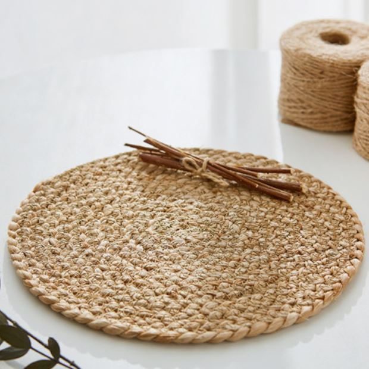
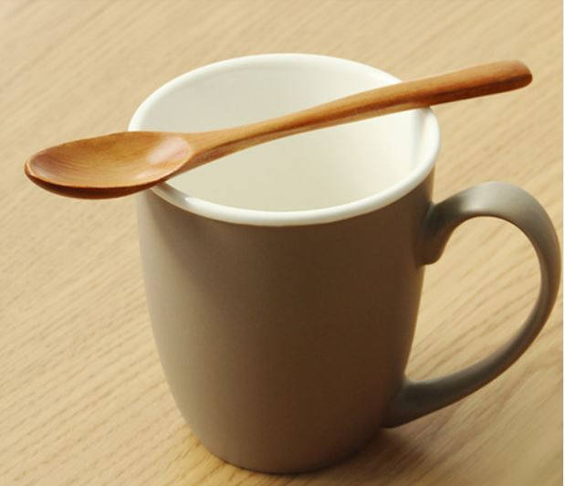
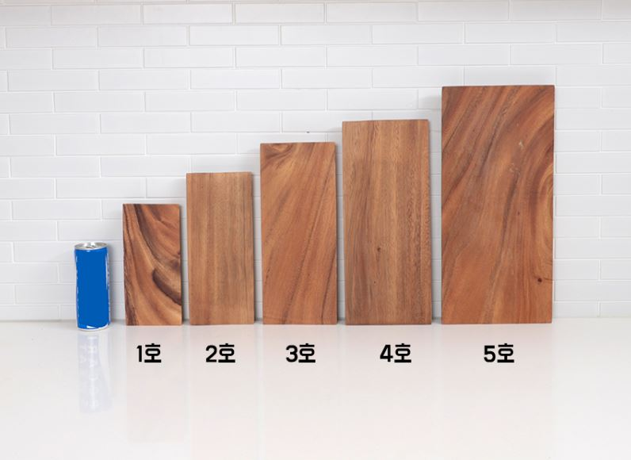
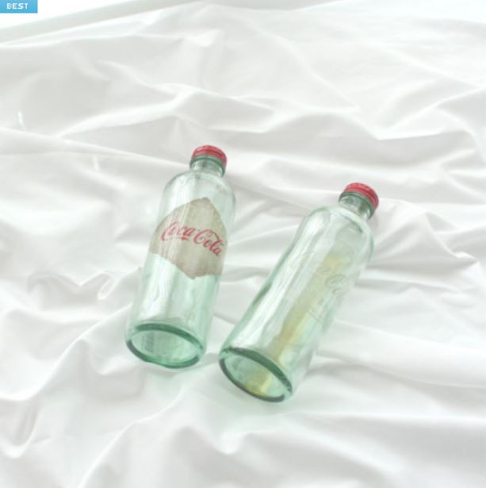

글라스잔 / 라탄매트 / 우드 티스푼 / 우드플레이트 / 촬영용 천 / 조화 장미
1)글라즈잔 1900원
2)라탄매트 1200원
3) 우드 티스푼 1000원
4) 우드 플레이트 2190원
5) 촬영용 천 1800원

6) 조화 장미 1280원
- 인스타감성으로 홈카페를 꾸미고 싶은 사람들의 니즈 충족
- 키트 하나로 홈카페 분위기를 완성할 수 있다
- 메인이미지
- 구성품 상세 이미지
- 비포애프터
- 인스타 업로드 이미지
- 배송구성 이미지 (패키지와 내용)
- 배송안내